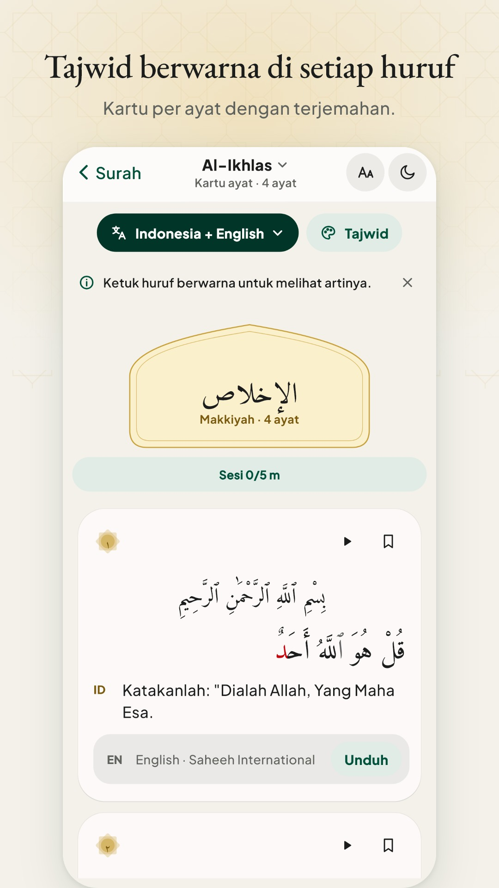
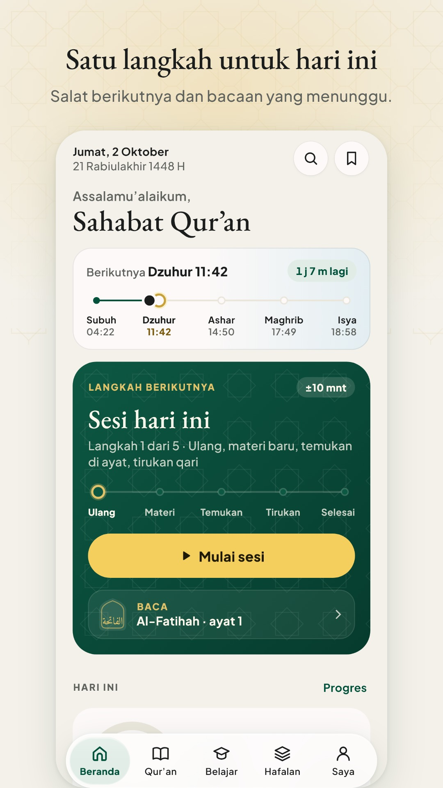
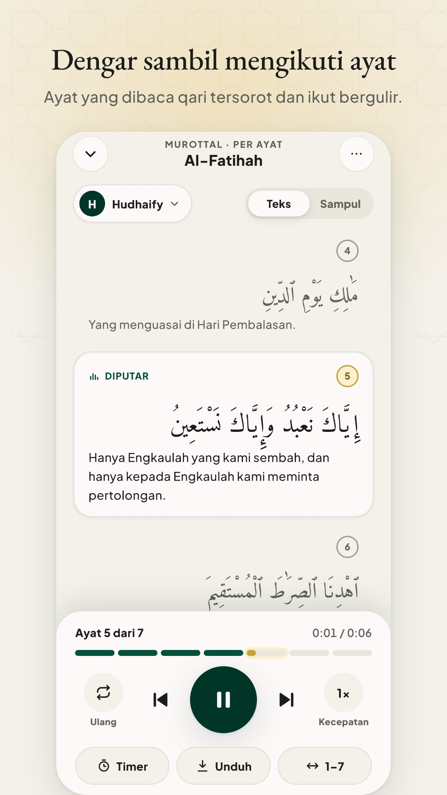
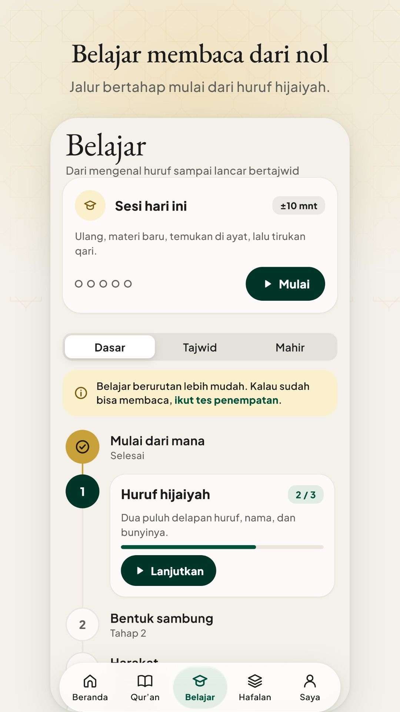
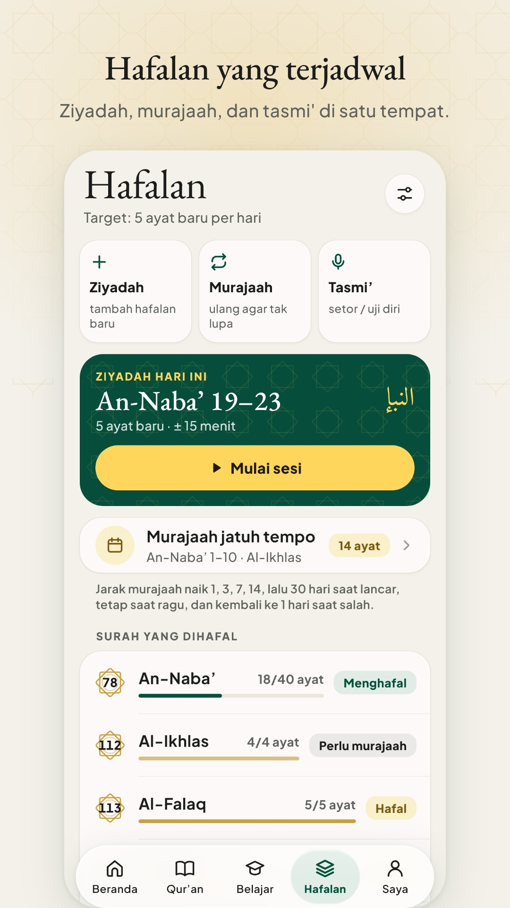

Membaca
Kartu per ayat dengan teks Uthmani dan terjemahan Indonesia yang tersimpan di HP. Ketuk huruf bertajwid untuk melihat nama hukumnya.
Aplikasi Android · Gratis
MyQuran menyatukan bacaan, murottal, belajar tajwid, hafalan, dan jadwal salat dalam satu aplikasi. Tanpa iklan, tanpa pembelian, dan tetap bisa dibuka tanpa internet.





Kartu per ayat dengan teks Uthmani dan terjemahan Indonesia yang tersimpan di HP. Ketuk huruf bertajwid untuk melihat nama hukumnya.
Putar per ayat dan terus berlanjut saat layar mati. Ulangi ayat atau rentang ayat, atur timer tidur, dan unduh per surah.
Jalur bertahap dari huruf hijaiyah sampai tajwid, dengan sesi harian sekitar 10 menit. Kamu menilai bacaanmu sendiri; aplikasi tidak menilai.
Ziyadah, murajaah, dan tasmi’ dalam satu tempat. Jadwal murajaah memberi tahu surah yang jatuh tempo.
Jadwal salat dengan metode Kemenag RI, pengingat tiap waktu, dan arah kiblat dari GPS dan kompas.
Tanpa iklan dan tanpa penjualan data. Masuk dengan Google bersifat opsional. Rekaman suaramu tidak pernah diunggah.
myquran.apk dari tombol di atas.Aplikasi di luar toko resmi wajib diperiksa. Ini caranya, dan hanya butuh satu menit.
myquran.apk
Memuat dari GitHub…
certutil -hashfile myquran.apk SHA256. Di macOS atau Linux:
sha256sum myquran.apk.Saat memasang, Android atau Play Protect bisa menampilkan peringatan “sumber tidak dikenal”. Itu wajar untuk aplikasi di luar Play Store. Kode sumbernya terbuka untuk diperiksa siapa pun.